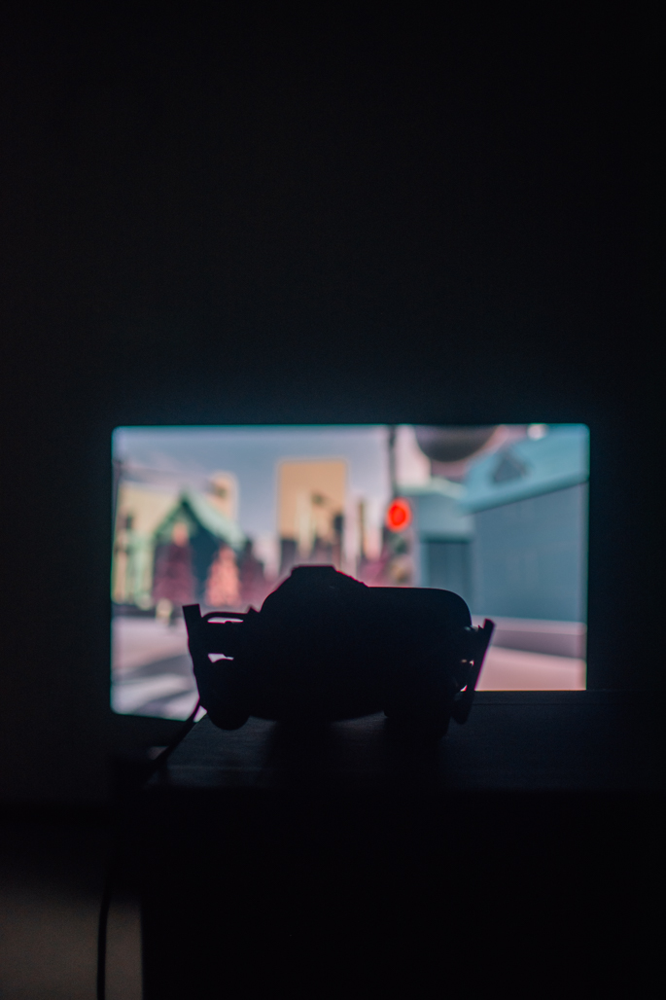
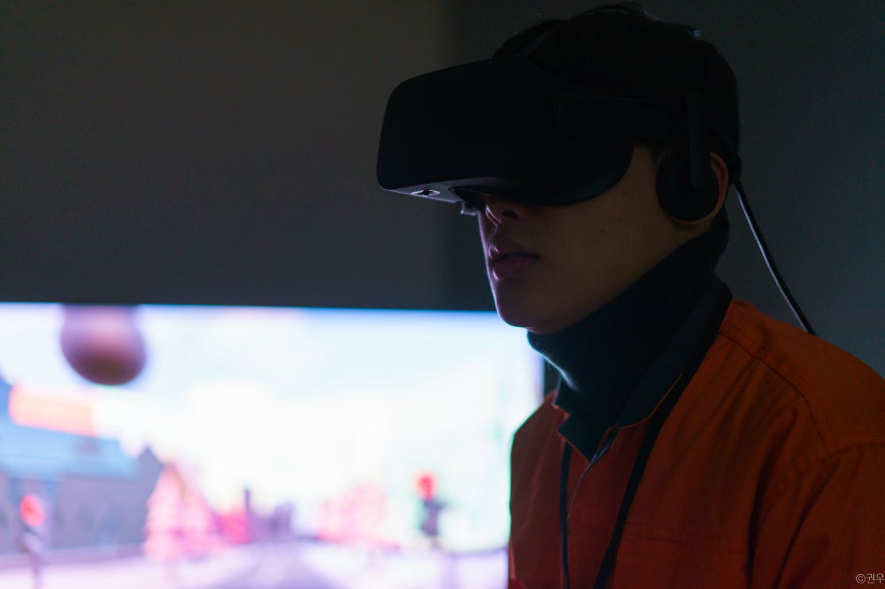
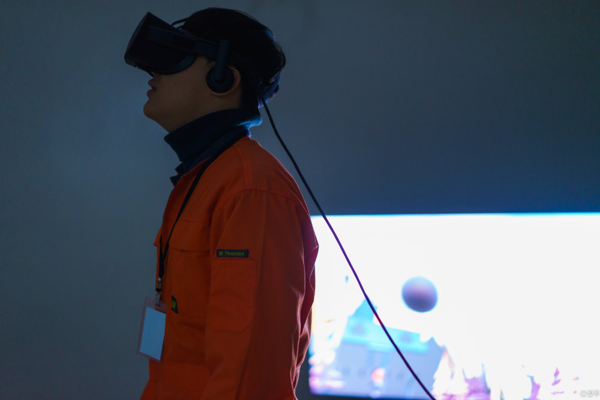
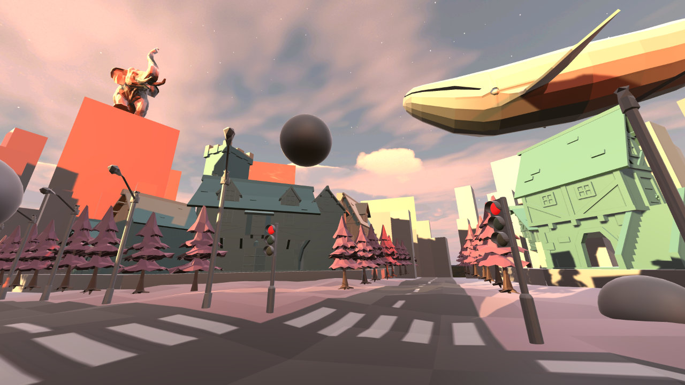
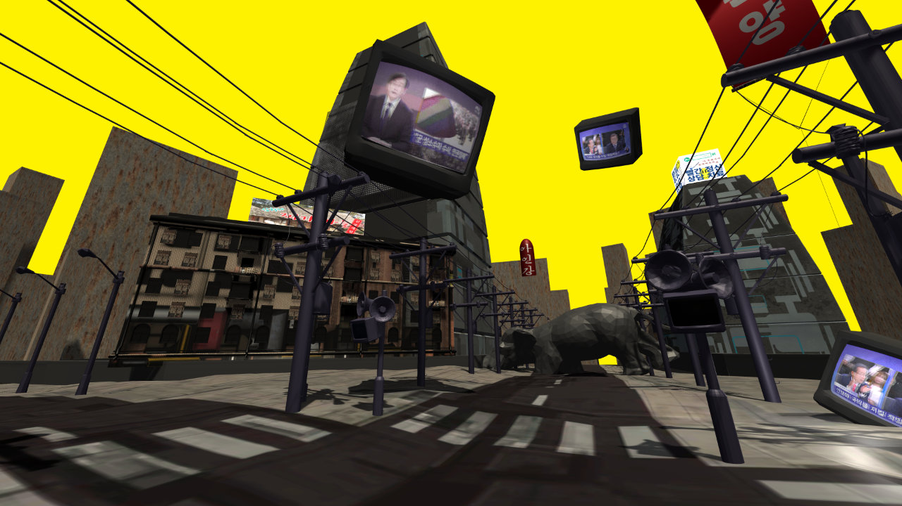

Objects in mirror are closer than they appear.
(사물이 거울에 보이는 것보다 가까이 있음.)
2017
Virtual Reality
Unity, CINEMA 4D, Logic Pro X, Max 7
3D modeling / composition by Yerin Choi
2D composition by Jinkyeong Song, Jongmin Jung
video composition by Jisan Min and Jongmin Jung
developed by Jongmin Jung
music by Jaewon Choi





개인에 대한 사회의 폭력은 어디서부터 시작되는가.
감상자는 VR을 착용한다. VR 속 세상은 프로젝터를 통해 밖에 투사되지만, 외부로 나가는 영상은 VR 내부의 모습과 다르다. 그러나 제삼자는 알 수 없다. VR 착용자는 VR을 벗고, 외부 프로젝터의 화면이 내부와 다름을 확인하고, 제삼자에게 말로 설명해야한다. 이 과정이 이 작품의 기본적인 메커니즘이다.
타인의 삶을 직접적으로 경험하는 것은 불가능하다. 오직 간접적인 경험만이 가능하다. 결국 타인은 개인의 삶을 완전히 알 수 없다. 그 중 가장 직접적 경험에 가까운 기술이 VR이다. VR은 근 몇년간 계속 발전해 오고 있으며, 우리는 이 기술로 롤러코스터도 타고, 판타지 월드도 가고, 섹스도 할 수 있다.
VR 산업이 바라보는 방향은 사회가 이상으로 여기는 방향과 같다고 생각한다. 우리 사회는 어느 방향을 바라보고 있는가. 아니 어느 곳을 등지고 있는가. 그 그림자 안에도 누군가는 살고 있고, 계속 소리치고 있다.
여러가지 ‘비정상’과 같은 이름을 달아 놓음으로 자신들의 삶과 거리를 두려고 부단한 노력을 하지만, 존재는 지워질 수 없다. 우리는 생각보다 가까이에 존재하고 있다.
Where does the systematic abuse towards individuals start?
The audience equips HMD. The VR scene is displayed on the projector outside. But in reality, the projection is different to the inner-VR visual. Still, the spectators outside cannot notice that. The audience has to acknowledge and explain the difference of images between outer-VR and inner-VR. This procedure is the basic mechanism of this work.
It is impossible to directly experience others’ lives. You can only perceive them second-handed. As a result, nobody can truly understand another’s life. VR is the most undeviating way to experience other’s life. VR has been advancing throughout recent years. In VR world, we can ride a rollercoaster, visit fantasy worlds, and have a sex.
The general course VR industry is walking is akin to the ideal of the society. What direction is our society looking towards? More importantly, what direction is the society abandoning? There are people living inside the shadows, and they are crying out loud.
People struggle to keep distance between themselves and the minority by calling them ‘abnormal,’ but the subsistence cannot be erased. We are ever closer than you think.